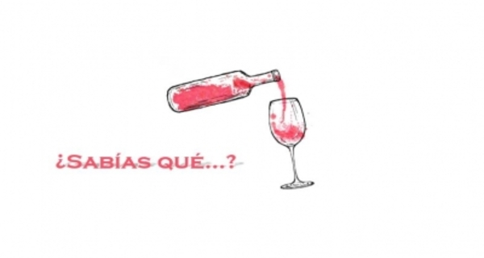

Historias
La historia del vino es tan antigua como la humanidad. El hombre
prehistórico ya sabía cómo elaborarlo y los paleontólogos han encontrado
fósiles en los que aparecen uvas prensadas,te invitamos a conocer los inicios de esta fantastica bebida.
Curiosidades

El mundo del vino es sin duda apasionante, por ello nos encontramos
con lugares increíbles, anécdotas asombrosas y mil y una situaciones que nos llaman la atención.
Hemos seleccionado las siguientes curiosidades de diferentes temáticas y situaciones para ti.
Lo tienes que saber
La historia del vino es tan antigua como la humanidad. El hombre
prehistórico ya sabía cómo elaborarlo y los paleontólogos han encontrado
fósiles en los que aparecen uvas prensadas,te invitamos a conocer los inicios de esta fantastica bebida.